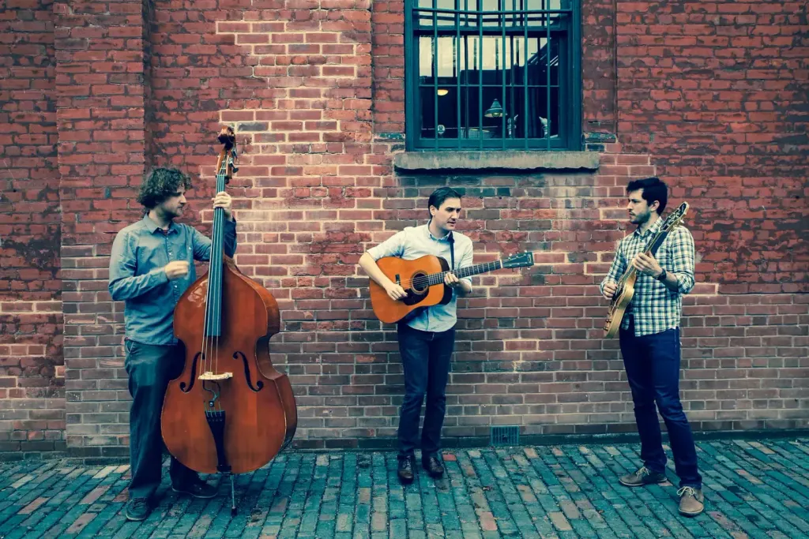

The band taking the role of the roadie way too far.
The release party for Lullabies for City Life at Junction City
Music Hall.

Photo shoot in the Distillery District.Handsome portrait photo of Ryan.Blurred and bokeh photo of the band.Jordan tearing it up on harmonica.My sweet, sweet Martin D21.Thinking way too hard.